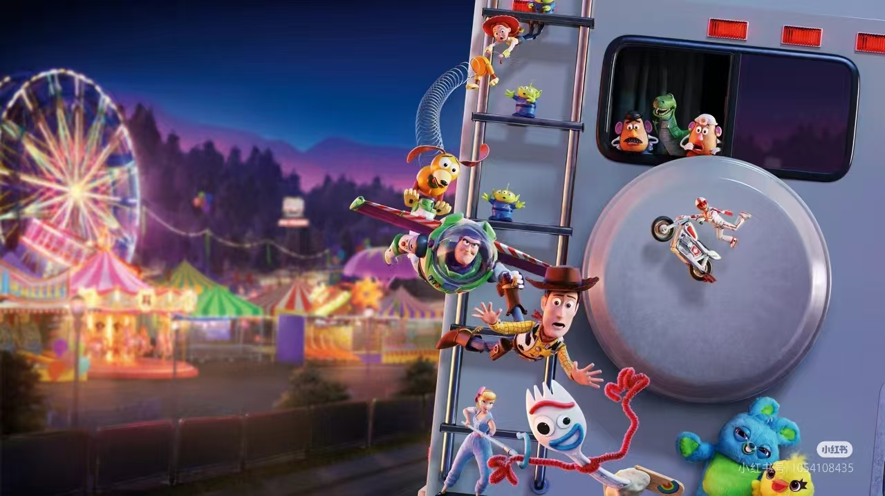

玩具总动员
我们玩具可以看到一切事物
玩具胡迪原本是小主人最喜欢的玩偶，却遇到了“新宠”太空战警巴斯光年。胡迪心生嫉恨，想要赶走巴斯光年，结果两人意外掉到邻居家，遇到玩具虐待狂。两人化敌为友，经历种种冒险后回到主人身边。
安迪的成长和变化让玩具们面临被取代的风险，但他们最终学会了接纳和适应这种变化。这提醒我们要以开放的心态面对生活中的变化。
"我在想，像我这种普通的玩具怎么跟你这种巴斯光年来比呢？"
它们走出狭小的屋子，最终认知到自我与世界的关系
玩具们通过团队合作共同解决问题，实现了共同的目标

玩具总动员
《玩具总动员1》是第一部真正的3D动画电影，由迪士尼和皮克斯合作推出。即使过了26年，特效和剧情依然不输当下。
白该片大获成功后，制作方又陆续拍了3部，堪称经典系列。最近的一部在2019年上映，依然在豆瓣拿到8.5分的好成绩。
天马行空的想象力，赋予玩具鲜活的生命力
一场充满刺激的冒险
1.珍视友谊 电影中的玩具们彼此关心、支持，共同面对困难。这教会我们要珍视 身边的朋友，学会与他们分享喜怒哀乐。 2.勇敢面对挑战 胡迪和巴斯光年等角色在电影中多次面临困境，但他们从未放弃。这 启示我们在生活中也要勇敢面对挑战，不轻易退缩。 3.接纳变化 安迪的成长和变化让玩具们面临被取代的风险，但他们最终学会了接纳和适应这种变化。这提醒我们要以开放的心态面对生活中的变化。4.忠诚与责任 玩具们对主人安迪的忠诚和对彼此的责任，展现了他们坚定的品质 这教育我们要对自己的行为和承诺负责，做一个忠诚可靠的人。 5.团队合作 电影中，玩具们通过团队合作共同解决问题，实现了共同的目标。这强调 了团队合作的重要性，教会我们在集体中要相互协作，共同前进。